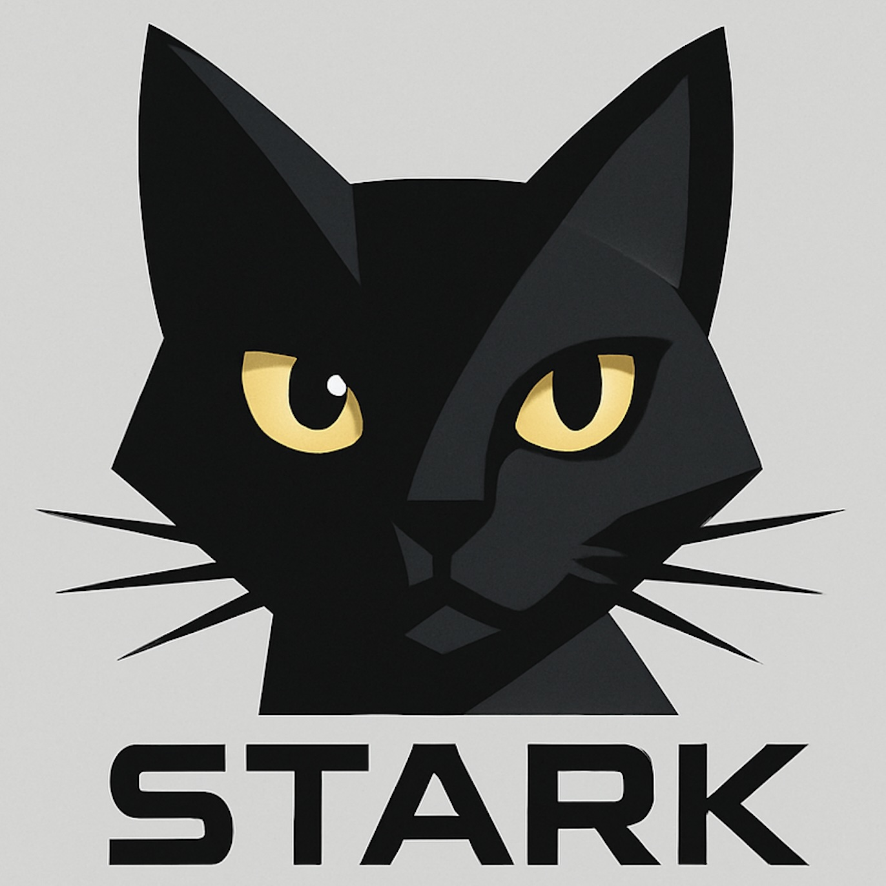
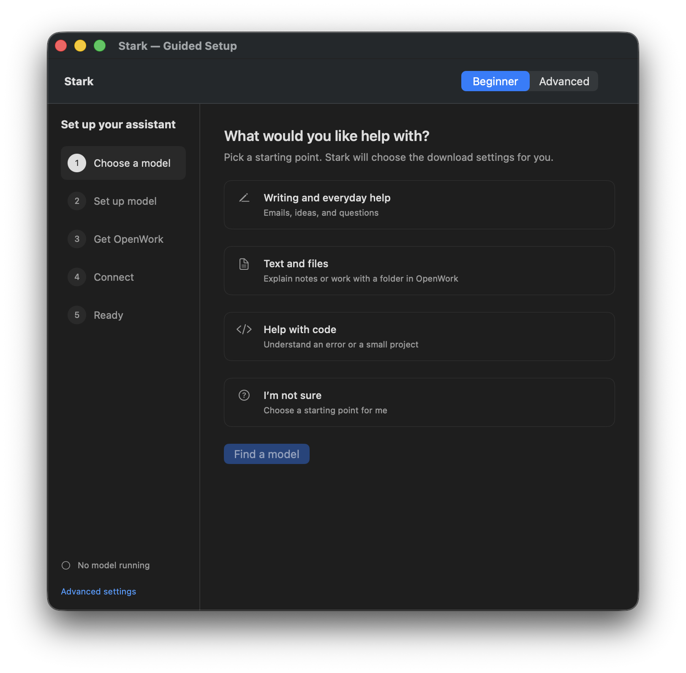
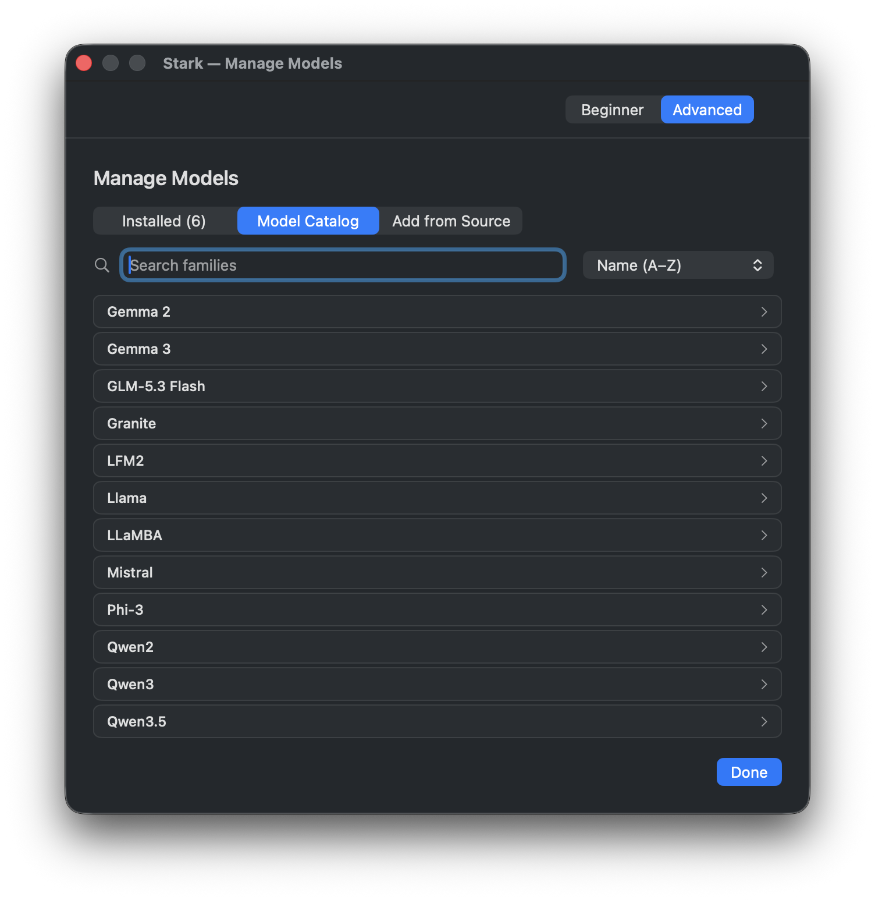
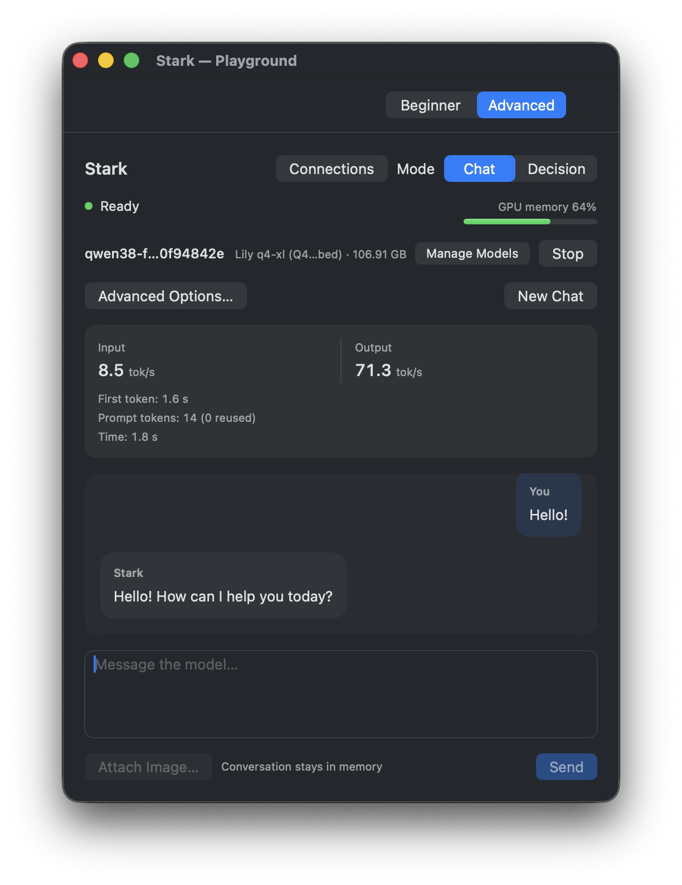

On-device inference.
Stark processes model requests locally. Stark does not log prompts or responses from its local API; Playground conversations stay in memory.
LOCAL AI / BUILT FOR APPLE SILICON
Run free, open-weight AI models for coding, writing and everyday tasks. Stark processes prompts and responses on your Mac; nothing is transmitted to us.
Use built-in chat, or connect OpenWork and OpenCode Desktop. Connected apps and tools have their own data practices.

MEET THE MAC APP
Choose a model, run it from your menu bar, and put it to work. Start with guided setup or explore the catalog yourself.

Beginner checks memory, GPU budget and storage before recommending a model.

Advanced gives you the model catalog, source imports and generation settings.

Chat with your running model and explore its settings in Playground.
LOCAL BY DESIGN
Stark performs inference on your Mac. You choose the model and which apps can use it.
Stark processes model requests locally. Stark does not log prompts or responses from its local API; Playground conversations stay in memory.
The API listens only on this Mac, requires authentication and rejects browser-origin requests. Its persistent API key is stored in macOS Keychain.
We add no analytics or advertising trackers. The site uses system fonts. Our hosting provider may run security checks.
Model downloads and updates use the internet. Connected apps, plugins and tools have their own data practices and may access external services. Read Stark’s API and privacy boundaries.
GET STARTED
The guide takes you through choosing, downloading and starting a model. No Terminal needed.
Switch between Beginner and Advanced from the menu bar. Both share your installed models.
You'll need an Apple silicon Mac (M1 or newer) with macOS Tahoe 26.4 or newer, plus room for a model download. Check your Mac in Apple menu → About This Mac.
A model is the AI you download and run. Stark is the app that runs it. You can change models later.
Download the Mac app and open the DMG. If it includes Install Stark, open that installer; otherwise drag Stark into Applications. Open Stark, then look for the cat in your Mac's menu bar.
Download Mac appClick the cat, select Beginner, then Guided setup. Choose what you want help with and click Find a model. Stark checks your Mac and shows a recommendation.
Review the recommendation, then click Download and set up. When setup finishes, follow the prompt to start the model or continue with one that's already running. If a suitable model is already installed, you can use it without downloading it again.
Choose Chat in Stark instead in the guide, or Open chat from the menu bar. Try asking it to help draft a short email.
For serious work, continue through the guide's OpenWork steps. You'll install OpenWork separately, choose a workspace folder and allow its connection to Stark.
Stark checks supported model information against your Mac's memory, GPU budget and free storage. It estimates the memory needed to run each candidate, then ranks the options using your task and preference: Balanced, Lighter model or More model capacity.
The recommendation is an estimated starting point. Speed and answer quality depend on the model and your task. Beginner considers models it can check and set up through the guide; the broader catalog is available in Advanced.
This alternative installs the app to ~/Applications/Stark.app and the tools to ~/.local. It includes terminal chat, the converter and workers.
curl -fL https://github.com/jshahbazi/stark/releases/latest/download/install.sh -o stark-install.sh
sh stark-install.sh
export PATH="$HOME/.local/bin:$PATH"
stark doctor
open "$HOME/Applications/Stark.app"After the terminal install, stark doctor should report Installation checks passed. No model was loaded. Add the PATH line to ~/.zprofile for future terminals.
USE IT YOUR WAY
Stark runs the model. Choose OpenWork for everyday work, OpenCode for coding. Install your chosen desktop app separately; Stark can open it and set up the connection.
FOR EVERYDAY WORK
OpenWork is a desktop app for working with AI on your files. You describe the task in ordinary language.
Get OpenWork for MacChoose macOS → Apple Silicon on its download page. In OpenWork, open a local workspace: the folder it can work in. Start with a folder containing a test file.
With a model running in Stark's Chat mode, choose Connect on the OpenWork row. Stark sets up the connection. No API key to copy.
If Stark asks, quit OpenWork completely and reopen it. In OpenWork's model picker, choose Stark and the running model. Keep Stark open while you work.
Already installed? Stark can open OpenWork for you. You'll still need to choose a local workspace.
“Read this note and give me three key points.”
Start with a short test file and check the result.FOR CODING PROJECTS
OpenCode helps you understand and change code. Choose its desktop app for a window you can click through.
Get OpenCode DesktopOn its download page, find OpenCode Desktop and choose macOS (Apple Silicon). Use version 2.2.5 or newer. Once installed, Stark can open it for you.
With a model running in Stark's Chat mode, choose Connect on the OpenCode Desktop row. Stark opens the app and sets up the connection. No API key to copy.
Choose Stark and the running model in OpenCode's model picker. If Stark asks about a new OpenCode engine, choose Allow in Connections. Keep Stark open.
The engine is OpenCode's background helper. After an update or restart, Stark may ask you to allow the new helper before it can use your model.
“Explain what this project does. Don't change any files.”
Open a test project and review the answer.Building your own app? Explore the API and native workers
For tasks that read files or use tools, your model must support tool calling. In Stark's Connections window, look for “Tool use available” under the running model. Results depend on the model and the task; start small and review its work.
Choose the one that fits your task. You can also chat directly in Stark using Open chat in Beginner or Open Playground → Chat in Advanced, without installing either.
The selected Stark model runs on your Mac. OpenWork and OpenCode are separate apps; any extra services or plugins you enable have their own data practices.
Keep Stark open and confirm your model is running in Chat mode. Both apps need a model with a declared context limit. Follow the message in Connections → Apps; it will explain a model limitation or ask you to reopen the app.
Open Connections → Apps and choose Manage → Disconnect for that app. Use Stop in Manage Models to stop the model.
Other compatible native apps can use the Base URL, API key and Model ID under Connections → Other apps. Choose an OpenAI-compatible provider in your app and copy those settings there. The key is stored in macOS Keychain and reused across launches; the saved port stays the same unless you change it. Keep the key private.
The guided OpenCode connection is for OpenCode Desktop. A standalone terminal engine uses the manual API-key setup. Stark's API is available only on this Mac; direct requests from web pages are unsupported.
API setup, supported models and limits